Quality Standard III
Teachers plan and deliver effective instruction and create an environment that facilitates learning for their students.
Element A – Teachers demonstrate knowledge about the ways in which learning takes place, including the levels of intellectual, physical, social, and emotional development of their students.


This Pulse Check artifact demonstrates my commitment to the whole-child approach by recognizing that physiological and emotional needs directly impact cognitive performance. By surveying students on their sleep, nutrition, and external stressors alongside a content-based warm-up, I acknowledge that intellectual growth cannot occur in a vacuum. This daily data allows me to pivot my instruction in real-time, providing necessary "safety nets" or additional scaffolding for students who are not currently in an optimal state for high-level learning.
Furthermore, this practice supports social and emotional development by providing a consistent, private channel for students to share personal challenges. I use these digital touchpoints to build a culture of trust and responsive pedagogy. This evidence shows I don't just teach Economics and Business, but also monitor the physical and emotional readiness of my learners to ensure they have the stability required to master complex global concepts.
Furthermore, this practice supports social and emotional development by providing a consistent, private channel for students to share personal challenges. I use these digital touchpoints to build a culture of trust and responsive pedagogy. This evidence shows I don't just teach Economics and Business, but also monitor the physical and emotional readiness of my learners to ensure they have the stability required to master complex global concepts.
Element B – Teachers use formal and informal methods to assess student learning, provide feedback, and use results to inform planning and instruction.
 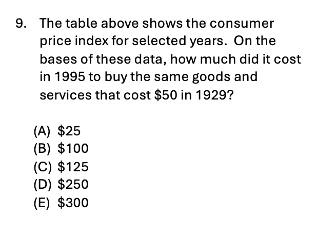
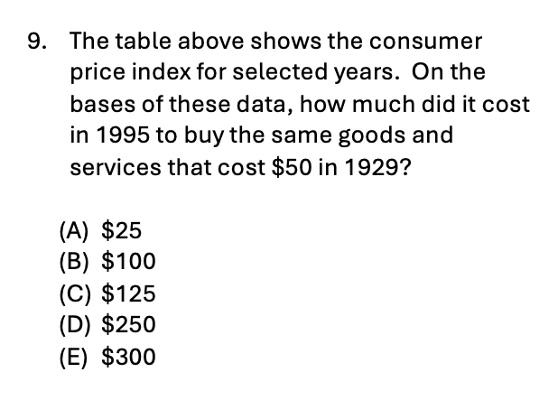
During a class focused on inflation, I used informal questioning and in-class practice to monitor student mastery of Consumer Price Index (CPI) calculations. These assessments revealed that while students understood the concept of inflation, they struggled with the mathematical application of the percentage change formula. In response, I adjusted my daily planning to include targeted scaffolds and warm-up drills to reinforce these calculation skills before the unit exam.
The summative assessment included a higher-challenge question requiring students to calculate purchasing power across different years. Despite the targeted practice, this question was the most frequently missed item on the exam. Consequently, I have integrated additional review into my future lessons to ensure this core concept is solidified, demonstrating my commitment to using formal and informal results to inform and improve long-term instruction.
The summative assessment included a higher-challenge question requiring students to calculate purchasing power across different years. Despite the targeted practice, this question was the most frequently missed item on the exam. Consequently, I have integrated additional review into my future lessons to ensure this core concept is solidified, demonstrating my commitment to using formal and informal results to inform and improve long-term instruction.
Element C – Teachers integrate and utilize appropriate available technology to engage students in authentic learning experiences.
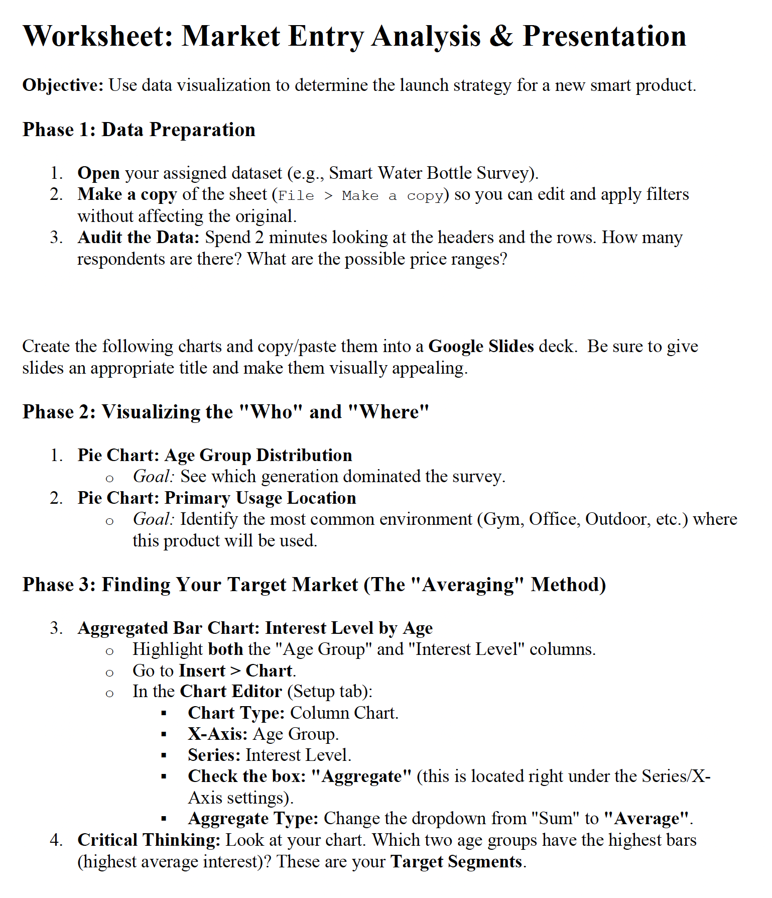
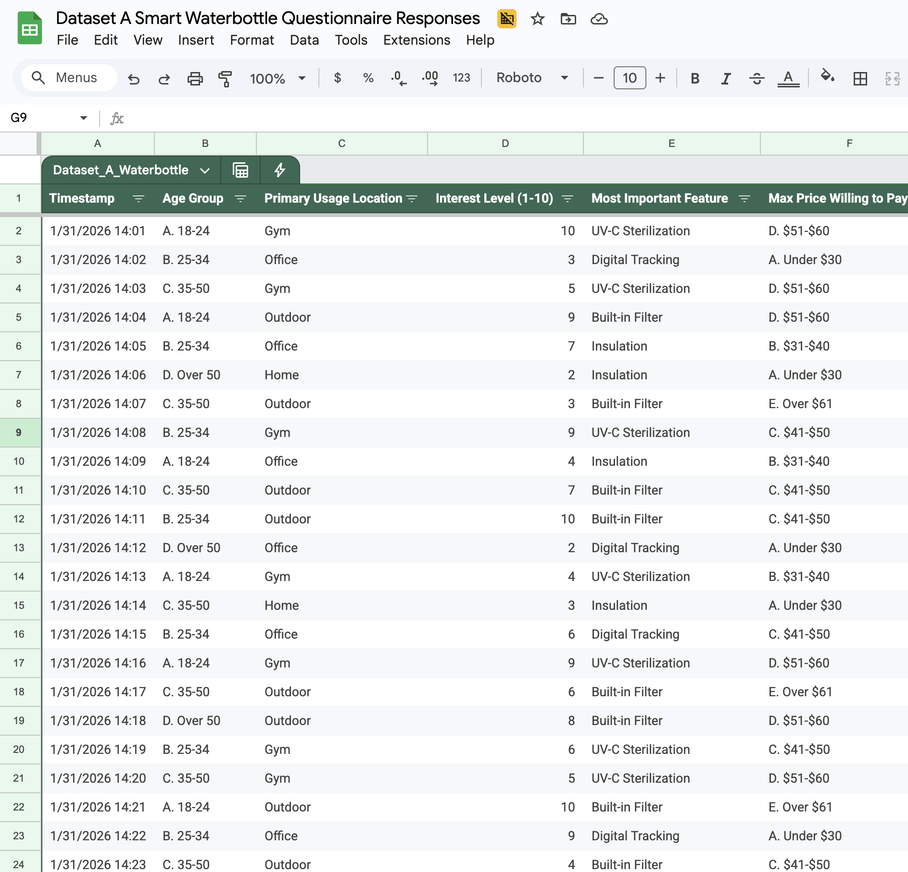
In my Business and Marketing courses, I utilized Google Sheets to bridge the gap between data collection and strategic decision-making. I first scaffolded student learning with a hypothetical market research dataset where students used spreadsheets to sort raw data and generate visualization tools—such as pie and bar charts—to identify key consumer trends. This allowed students to master data interpretation using professional-grade digital tools before applying them to their own original concepts.
The marketing unit then culminated in an authentic market research project where students brainstormed an original product and designed, administered and analyzed results from their own surveys via Google Forms and Sheets. Students analyzed their primary data to justify a proposed marketing mix, ultimately pitching their products through digital presentations. By integrating these collaborative platforms, I provided students with a borderless, tech-driven learning experience that mirrors the data analysis workflows of the modern global economy.
The marketing unit then culminated in an authentic market research project where students brainstormed an original product and designed, administered and analyzed results from their own surveys via Google Forms and Sheets. Students analyzed their primary data to justify a proposed marketing mix, ultimately pitching their products through digital presentations. By integrating these collaborative platforms, I provided students with a borderless, tech-driven learning experience that mirrors the data analysis workflows of the modern global economy.
Element D – Teachers establish and communicate high expectations and use processes to support the development of critical-thinking and problem-solving skills.
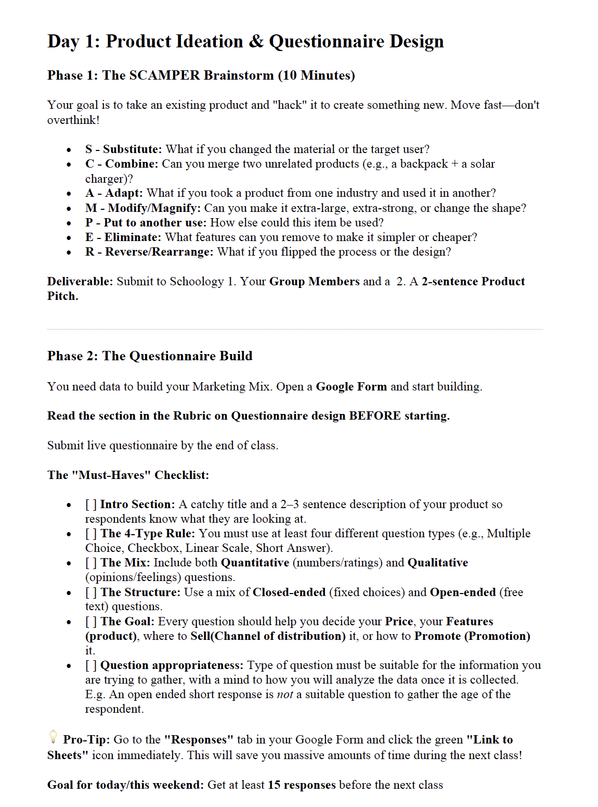
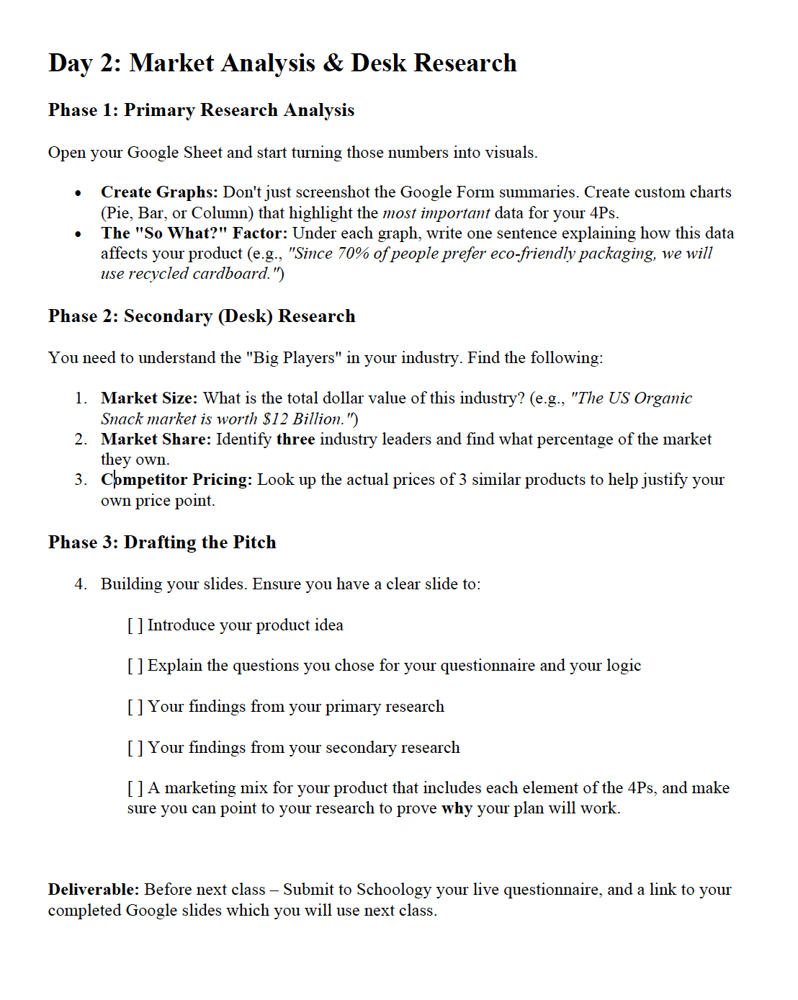
For this multi-day Marketing Mix project, I established high expectations by challenging students to transform a hypothetical concept into a data-backed business strategy within a tight three-period window. To drive critical thinking, I introduced the SCAMPER framework, requiring teams to hack existing products through substitution, combination, or elimination rather than simply reinventing common ideas. This initial phase forced students to engage in rapid problem-solving and rigorous ideation to identify unique market opportunities.
I supported the development of these skills by mandating that every element of their 4Ps (Product, Price, Place, Promotion) be justified through a synthesis of primary survey findings and secondary research on market size and competitor share. Students were held to professional standards, as final pitches were judged against a strict rubric focused on their ability to justify their strategy with custom charts and empirical evidence. This process ensured students moved beyond intuition to develop the disciplined reasoning required in a collegiate or professional business environment.
I supported the development of these skills by mandating that every element of their 4Ps (Product, Price, Place, Promotion) be justified through a synthesis of primary survey findings and secondary research on market size and competitor share. Students were held to professional standards, as final pitches were judged against a strict rubric focused on their ability to justify their strategy with custom charts and empirical evidence. This process ensured students moved beyond intuition to develop the disciplined reasoning required in a collegiate or professional business environment.
Element E – Teachers provide students with opportunities to work in teams and develop leadership.
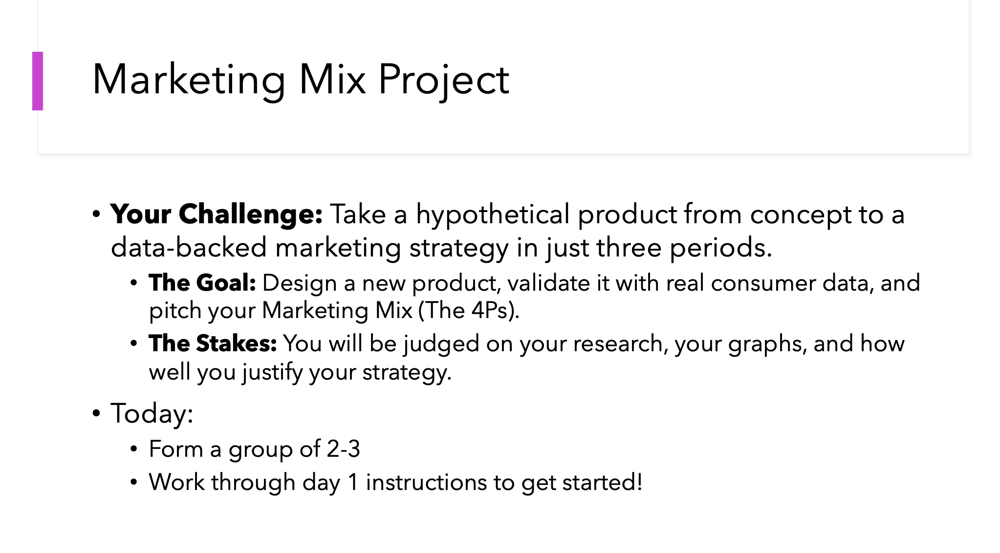
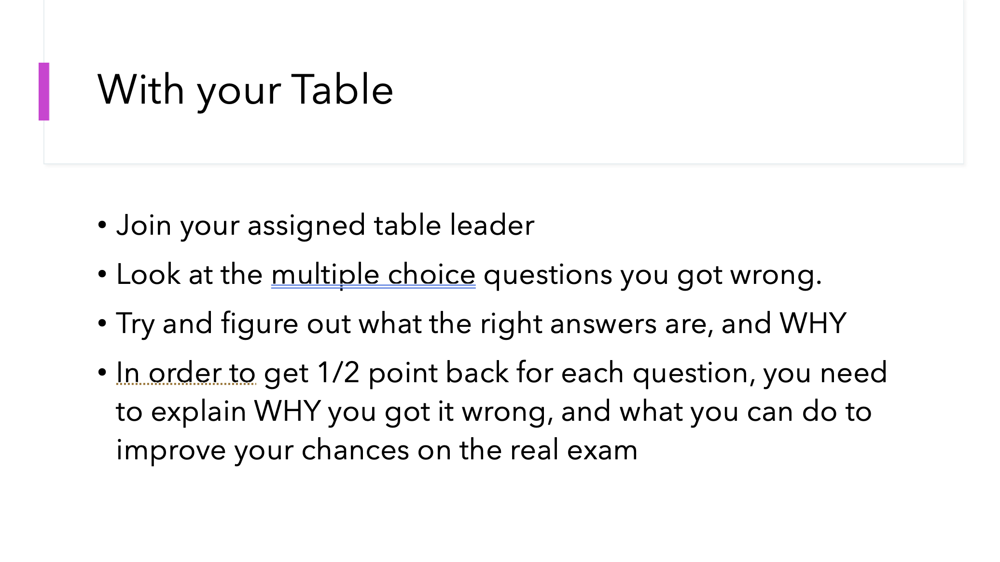
I provide students with regular opportunities to develop collaborative and leadership skills through both high-stakes projects and daily instructional routines. During the multi-day marketing strategy project, students worked in teams to navigate collective decision-making, rapid ideation, and the coordination of responsibilities for a professional pitch. This structure fostered the essential communication and project management skills required in the modern business world
Beyond formal projects, I utilize strategic grouping during post-assessment cycles in my Econ class to develop student leadership. Following a summative exam, I identified top-scoring students to serve as table leaders to guide their peers through the revision process. These leaders were tasked with explaining complex concepts, helping their teammates identify errors and improve their understanding to earn credit back. This approach ensures students not only practice collaborative teamwork but also take on active instructional leadership roles within the classroom.
Beyond formal projects, I utilize strategic grouping during post-assessment cycles in my Econ class to develop student leadership. Following a summative exam, I identified top-scoring students to serve as table leaders to guide their peers through the revision process. These leaders were tasked with explaining complex concepts, helping their teammates identify errors and improve their understanding to earn credit back. This approach ensures students not only practice collaborative teamwork but also take on active instructional leadership roles within the classroom.
Element F – Teachers model and promote effective communication.
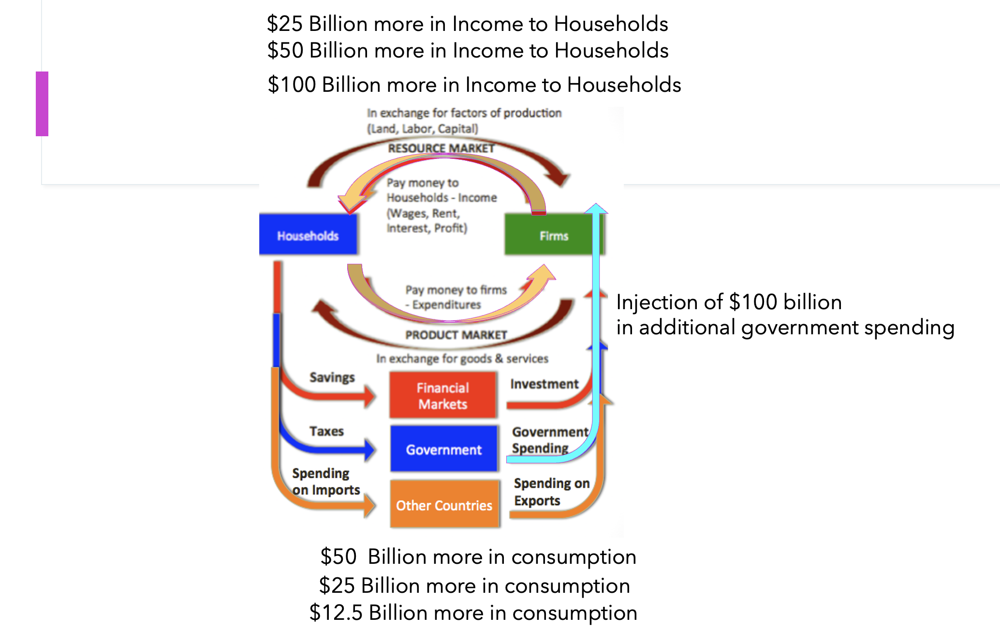
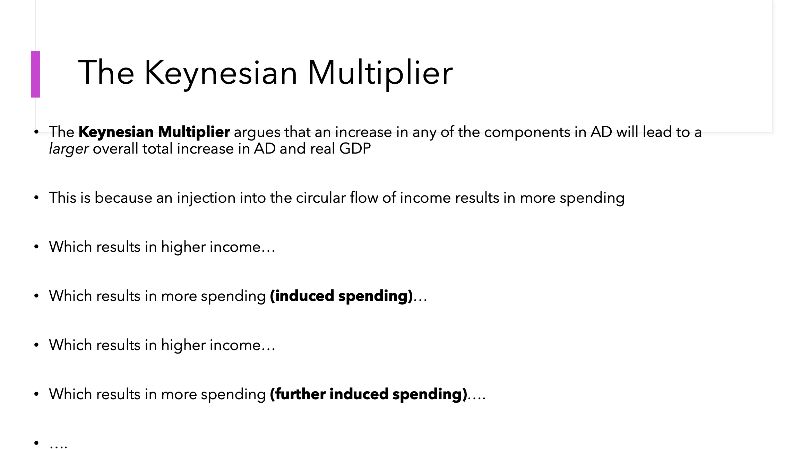
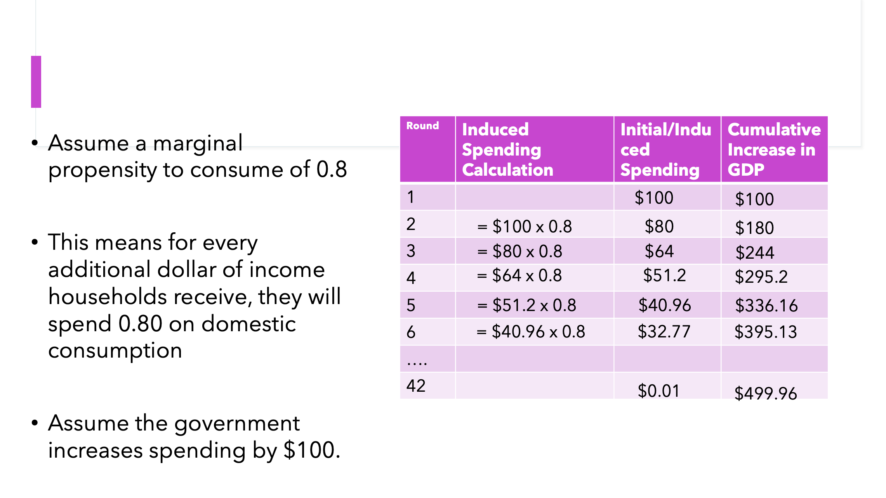
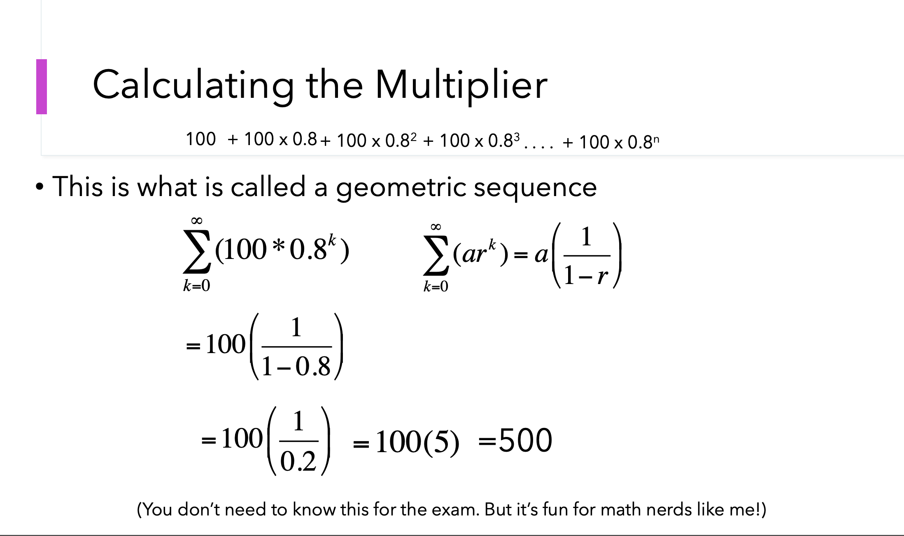
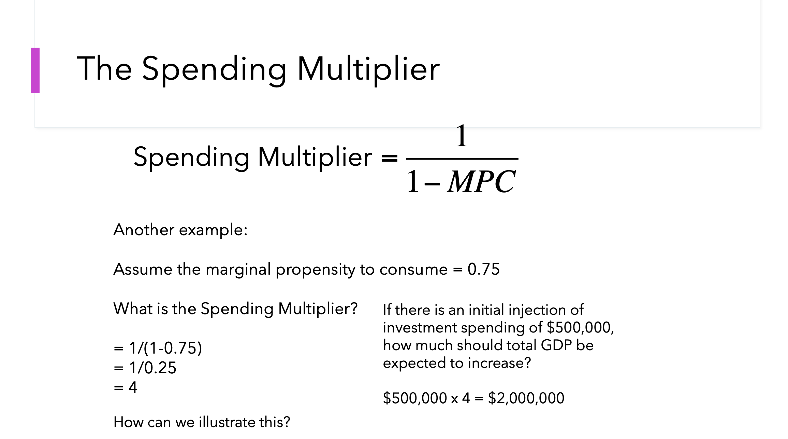
I model effective communication by using diverse instructional media—visual, linguistic, and mathematical—to make complex economic concepts accessible. When teaching the spending multiplier, I present the content through three distinct lenses: a visual circular flow diagram for conceptual clarity, a text-based logic explanation, and a step-by-step mathematical derivation. This multi-modal approach demonstrates how to tailor technical information to different analytical needs and audience styles.
To promote these skills, I require students to adopt a similar multi-faceted approach in their own work. In the marketing project, students must translate raw data into a cohesive narrative using a combination of verbal pitches, written justifications, and custom data visualizations. By holding students to these standards, I ensure they develop the versatile communication toolkit necessary to navigate and lead in a global business environment.
To promote these skills, I require students to adopt a similar multi-faceted approach in their own work. In the marketing project, students must translate raw data into a cohesive narrative using a combination of verbal pitches, written justifications, and custom data visualizations. By holding students to these standards, I ensure they develop the versatile communication toolkit necessary to navigate and lead in a global business environment.